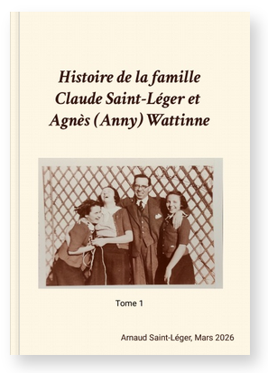

Famille Saint-Léger / Wattinne - Les récits, mémoires, bibliographies
Les récits de ...
Philippe a été le fondateur de l'histoire de la famille. Vous allez plonger à travers les générations. On commence par les récits les plus récents et les plus accessibles.
Je vous conseille d'ouvrir ou d'imprimer une roue de l'arbre généalogique pour vous y retrouver facilement : 📖 Lire 📖 Imprimer

Commander le tome 1 sur Lulu.com :
La branche Saint-Léger : de Philippe à Claude, de 1787 à 1944 ; en passant par Pierre-Joseph Bonte-Pollet, Marguerite Delemer.
Livre broché, couverture rigide, 137 pages en couleur
Ou télécharger le tome 1, en format PDF, pour l'imprimer sur papier :
Arnaud Saint-Léger en 2025 - branches Saint-Léger
Introduction
D'où vient le nom Saint-Léger ?
On remonte à Hugues Capet, premier roi des Francs
Philippe Saint-Léger
Victor Saint-Léger
Georges Saint-Léger
André Saint-Léger et Marguerite Delemer
André Saint-Léger et Marguerite Delemer - De l'ombre à la lumière
Claude Saint-Léger - 1° guerre mondiale
Claude Saint-Léger - entre deux guerres
Claude Saint-Léger - La seconde guerre mondiale
Claude Saint-Léger - Zoom sur 1943-1944
Souvenirs pêle-mêle decousins
Arnaud Saint-Léger en 2025 - branches Bonte-Pollet
La branche Bonte-Pollet
Arnaud Saint-Léger en 2025 - branches Wattine-Bossut
Quand nos ancêtres faisaient tourner les usines du Nord : Wattinne-Bossut, Droulers, Prouvost, Longhaye, Bonte-Pollet, ...
Les racines Louis Wattinne-Bossut
Louis Wattinne et Pauline Bossut — Une famille entre laine et coton (1837–1929)
Christophe Obry et le Colonel Philippe Grard
Hommage à un Français libre... rallié en 1915!
Agnès Wattinne vers 1985
Claude Saint-Léger
Anny (Agnès Wattinne) et Claude Saint-Léger
André Saint-Léger
Marguerite Delemer
André Saint-Léger en 1947
Georges, Victor, Philippe, les grands Pères Longhaye et Bonte-Pollet
Marguerite Delemer en 1917
Journal de la 1° guerre mondiale
Auteur inconnu en 1914
Octobre 1914 Extrait d'un carnet de notes
Philippe Saint-Léger en 1855
A Victor, après ma mort. Pour lui seul. (1855)